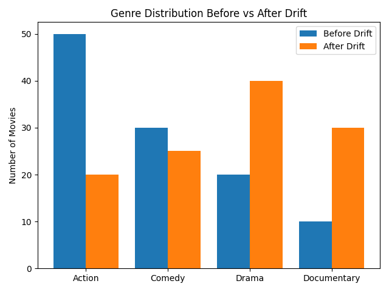

🎬 Catching Data Drift in Movie Recommendations with Evidently AI
How a lightweight monitoring workflow reveals shifting user tastes and keeps recommendations relevant.
Introduction
The recommendation system in movie streaming services relies on the user's behavior to suggest films, but user tastes are subject to rapid change. It is possible for thrillers to dominate one month, while animated shows may gain popularity the next. The recommendations generated by machine learning modele are outdated or relevant if they are not adpted. Maintaining relevance and accuracy of recommendations over time requires continuous monitoring of user behavior and detecting data drift.
Data drift, the statistical changes in the properties of input data over time, which can make recommendation appear outdated or irrelevant. Occurs when the incoming data no longer aligns with the data the models was originally trained on.
In this post, I demonstarted how this challenge can be addressed in an experiment using Evidently AI, an open‑source monitoring tool, to detect drift in a simulated movie‑streaming scenario.
Baseline model results
In order to predict user behavior, a simple watch-probability model was developed. The model predicts whether a user is likely to watch a movie based on regions, device, age group and genre affinities.
Baseline performance:
ROC‑AUC: 0.705 PR‑AUC: 0.562
in spite of these imperfections, the scores show that the model is learning meaniful patterns - enough to show that dfirt monitoring is performed.
Simulating drift
I simulated realworld change by introducing an increase in animated shows interest. Comparing the "current" datset to the "reference", users are more inclined to like animated shows than non-animated. In production, trends in content or demographic shift can quickly dimish the relevance of yesterday’s model.
Monitoring with Evidently
I used Evidently’s DataDriftPreset to compare reference vs. current data and generate an HTML dashboard.
from evidently import Report
from evidently.metric_preset import DataDriftPreset
report = Report(metrics=[DataDriftPreset()])
report.run(reference_data=ref_logs, current_data=cur_logs)
report.save_html("data_drift_report.html")Opening the dashboard revealed clear changes:
- Feature drift:
genre_animeandaff_animedistributions shifted significantly. - Prediction drift: The model’s score distribution changed, indicating calibration issues.
- Target drift: Watch outcomes differed between reference and current periods.
Insights and takeaways
- Models degrade silently: Without monitoring, recommendations can become irrelevant without obvious failures.
- Evidently surfaces instability: The dashboard highlights which features are drifting, guiding retraining decisions.
- Operational workflow: In production, set thresholds (e.g., drift share > 0.3) to trigger alerts or automated retraining.
# Programmatic summary example
summary = report.as_dict()
drifted = summary["metrics"][0]["result"]["data_drift"]["dataset_drift"]
drift_share = summary["metrics"][0]["result"]["data_drift"]["drift_share"]
print(f"Dataset drift: {drifted}, drift share: {drift_share:.2f}")Conclusion
Maintaining ML model is an important part of machine learning production. A movie streaming platform that catches drift early will have happier user and better engagement. This experiment demonstrates how Evidently AI can serve as a lightweight, accessible guardrail for recommendation systems.